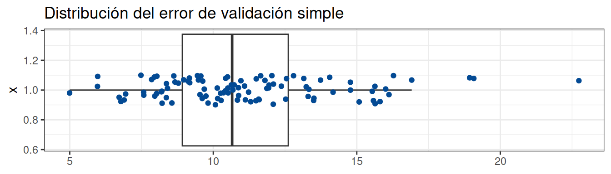

library(paqueteMODELOS)
library(tidyverse)
library(modelsummary)
data("arboles1")
arboles1$D1 = as.numeric(arboles1$mg=="GENOTIPO_2")
arboles1$D2 = as.numeric(arboles1$finca=="FINCA_2")
arboles1$D3 = as.numeric(arboles1$finca=="FINCA_3")
arboles1$peso = as.numeric(arboles1$peso)
arboles1$diametro = as.numeric(arboles1$diametro)
arboles1$altura = as.numeric(arboles1$altura)
summary(arboles1)## finca mg peso diametro
## Length:90 Length:90 Min. : 5.98 Min. :2.200
## Class :character Class :character 1st Qu.:13.64 1st Qu.:4.525
## Mode :character Mode :character Median :17.48 Median :5.400
## Mean :18.77 Mean :5.446
## 3rd Qu.:22.80 3rd Qu.:6.500
## Max. :47.87 Max. :8.800
## altura D1 D2 D3
## Min. : 3.300 Min. :0.0 Min. :0.0000 Min. :0.0000
## 1st Qu.: 5.225 1st Qu.:0.0 1st Qu.:0.0000 1st Qu.:0.0000
## Median : 6.450 Median :0.5 Median :0.0000 Median :0.0000
## Mean : 6.634 Mean :0.5 Mean :0.3333 Mean :0.3333
## 3rd Qu.: 7.875 3rd Qu.:1.0 3rd Qu.:1.0000 3rd Qu.:1.0000
## Max. :11.300 Max. :1.0 Max. :1.0000 Max. :1.0000# modelsummary::datasummary_skim(arboles1)`
# Se seleccionan 196 índices aleatorios que formarán el training set.
set.seed(1)
train <- sample(x = 1:90, 90*0.6)
modelo_train <- lm(peso ~ diametro + altura + D2 + D3, data = arboles1, subset = train)
summary(modelo_train)##
## Call:
## lm(formula = peso ~ diametro + altura + D2 + D3, data = arboles1,
## subset = train)
##
## Residuals:
## Min 1Q Median 3Q Max
## -6.2439 -1.5659 -0.2644 1.7555 10.4622
##
## Coefficients:
## Estimate Std. Error t value Pr(>|t|)
## (Intercept) -12.4815 1.8778 -6.647 2.34e-08 ***
## diametro 4.4267 0.9069 4.881 1.16e-05 ***
## altura 0.9197 0.6870 1.339 0.18685
## D2 0.5413 1.3024 0.416 0.67950
## D3 3.2834 1.2005 2.735 0.00866 **
## ---
## Signif. codes: 0 '***' 0.001 '**' 0.01 '*' 0.05 '.' 0.1 ' ' 1
##
## Residual standard error: 3.243 on 49 degrees of freedom
## Multiple R-squared: 0.8736, Adjusted R-squared: 0.8633
## F-statistic: 84.65 on 4 and 49 DF, p-value: < 2.2e-16predicciones <- predict(object = modelo_train, newdata = arboles1[-train, ])
error <- mean((arboles1$peso[-train] - predicciones)^2)
error## [1] 11.11746De acuerdo con Joaquín Amat Rodrigo la validación simple puede presentar algunas desventajas debido a la dependencia de la estimación del error y la elección de la muestra de entrenamiento.
library(ggplot2)
library(gridExtra)
library(dplyr)
cv_MSE <- rep(NA,100)
for (i in 1:100) {
train <- sample(x = 1:90, 90*0.6)
modelo_train <- lm(peso ~ diametro + D3, data = arboles1, subset = train)
predicciones <- predict(object = modelo_train, newdata = arboles1[-train, ])
cv_MSE[i] <- mean((arboles1$peso[-train] - predicciones)^2)
}
p1 <- ggplot(data = data.frame(cv_MSE = cv_MSE), aes(x = 1, y = cv_MSE)) +
geom_boxplot(outlier.shape = NA) +
geom_jitter(colour = c("#034A94"), width = 0.1) +
coord_flip() +
labs(title = "Distribución del error de validación simple") +
theme_bw() +
theme(axis.title.x = element_blank())
p1
Este método permite estudiar la variabilidad de la estimación de los coeficientes de regresión lineal.
El método consiste en tomar una muestra con repetición de la data y con ella estimar el modelo. Los coeficientes estimados son guardados en un vector por cada estimador, al que se le obtiene la media y la desviación estándar.
#-------------------------------------------------------------------------------
library(boot)
# Se define la función que devuelve el estadístico de interés, los coeficientes
# de regresión
fun_coeficientes <- function(data, index){
return(coef(lm(peso ~ diametro + D3, data = arboles1, subset = index)))
}
# Se implementa un bucle que genere los modelos de forma iterativa y almacene
# los coeficientes. El data frame Auto tiene 392 observaciones
beta_0 <- rep(NA,9999)
beta_1 <- rep(NA,9999)
beta_2 <- rep(NA,9999)
for(i in 1:9999) {
coeficientes <- fun_coeficientes(data = arboles1,
index = sample(1:90, 90, replace = TRUE))
beta_0[i] <- coeficientes[1]
beta_1[i] <- coeficientes[2]
beta_2[i] <- coeficientes[3]
}
# Se muestra la distribución de los coeficientes
p0 <- ggplot(data = data.frame(beta_0 = beta_0), aes(beta_0)) +
geom_histogram(colour = "firebrick3") +
theme_bw()
p1 <- ggplot(data = data.frame(beta_1 = beta_1), aes(beta_1)) +
geom_histogram(colour = "firebrick3") +
theme_bw()
p2 <- ggplot(data = data.frame(beta_2 = beta_2), aes(beta_2)) +
geom_histogram(colour = "firebrick3") +
theme_bw()
grid.arrange(p0,p1,p2, ncol = 3, nrow=2,top = "Bootstrap distribution de los coeficientes")| Coeficiente estimado | media | desviación estándar |
|---|---|---|
| \(\widehat{\beta}_0\) | -10.01251 | 1.948114 |
| \(\widehat{\beta}_1\) | 5.118228 | 0.3805767 |
| \(\widehat{\beta}_2\) | 2.616257 | 0.6410573 |
| \(\widehat{\beta}_3\) | 0.54685 | 0.825865 |
Igual procedimiento se puede realiar con la función
boot
library(boot)
boot(data = arboles1, statistic = fun_coeficientes, R = 9999)##
## ORDINARY NONPARAMETRIC BOOTSTRAP
##
##
## Call:
## boot(data = arboles1, statistic = fun_coeficientes, R = 9999)
##
##
## Bootstrap Statistics :
## original bias std. error
## t1* -9.998769 -0.038639968 1.9837296
## t2* 5.125354 -0.003195156 0.3864227
## t3* 2.563446 0.054499682 0.6374615Al comparar los resultados obtenidos por el remuestreo y las estimaciones del modelo se obtienen diferencias pequeñas
summary(lm(peso ~ diametro + D3, data = arboles1))$coef## Estimate Std. Error t value Pr(>|t|)
## (Intercept) -9.998769 1.3563715 -7.371704 9.189463e-11
## diametro 5.125354 0.2358231 21.733890 6.474284e-37
## D3 2.563446 0.7222181 3.549407 6.253543e-04library(knitr)
modelo4 <- lm(peso ~ diametro + D3 , data = arboles1)
modelo3 <- lm(peso ~ diametro + D2 , data = arboles1)
modelo2 <- lm(peso ~ diametro + D2 + D3, data = arboles1)
modelo1 <- lm(peso ~ diametro + altura + D2 + D3, data = arboles1)
g1 <- glance(modelo1)
g2 <- glance(modelo2)
g3 <- glance(modelo3)
g4 <- glance(modelo4)
kable(rbind(g1, g2, g3, g4), digits = 2)| r.squared | adj.r.squared | sigma | statistic | p.value | df | logLik | AIC | BIC | deviance | df.residual | nobs |
|---|---|---|---|---|---|---|---|---|---|---|---|
| 0.85 | 0.85 | 3.19 | 124.13 | 0 | 4 | -229.57 | 471.14 | 486.14 | 865.64 | 85 | 90 |
| 0.85 | 0.84 | 3.23 | 161.09 | 0 | 3 | -231.05 | 472.11 | 484.61 | 894.69 | 86 | 90 |
| 0.83 | 0.82 | 3.44 | 207.32 | 0 | 2 | -237.26 | 482.53 | 492.53 | 1027.09 | 87 | 90 |
| 0.85 | 0.84 | 3.23 | 240.56 | 0 | 2 | -231.66 | 471.33 | 481.33 | 906.91 | 87 | 90 |
library(stargazer)
stargazer(modelo1, modelo2, modelo3, modelo4, type = "text",
omit.stat=c("ser","f"),
model.numbers = FALSE, object.names = TRUE,
star.cutoffs = c(0.05, 0.01, 0.001))##
## =====================================================
## Dependent variable:
## ----------------------------------------
## peso
## modelo1 modelo2 modelo3 modelo4
## -----------------------------------------------------
## diametro 3.837*** 4.976*** 5.226*** 5.125***
## (0.726) (0.273) (0.281) (0.236)
##
## altura 0.942
## (0.558)
##
## D2 1.384 1.046 -0.836
## (0.976) (0.965) (0.861)
##
## D3 3.522*** 3.074*** 2.563***
## (0.893) (0.862) (0.722)
##
## Constant -10.017*** -9.703*** -9.412*** -9.999***
## (1.380) (1.382) (1.470) (1.356)
##
## -----------------------------------------------------
## Observations 90 90 90 90
## R2 0.854 0.849 0.827 0.847
## Adjusted R2 0.847 0.844 0.823 0.843
## =====================================================
## Note: *p<0.05; **p<0.01; ***p<0.001